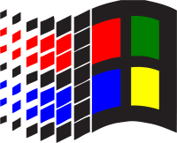

Let me introduce myself

Greetings ! I'm just a normal guy who does coding for fun and I love the old web and nostalgic stuff in general, and I try to love my neighbor as myself. I have Autism and ADHD, and many specific interests, mostly stuff that most people do not care about, like my unreasonable obsession over physical media and Vocaloid. When i learned more about the 1990s internet, I really wanted to make my own website, and this is what I did.
My Interest in the Personal Web

I don't remember when I first went on the internet, but it was probably in 2007 or maybe earlier. So I have not experienced the internet when Geocities was at it's peak. But I was still around to experience some old forums and I remember how non-corporate and personal the web used to be.
I have very fond memories of the old YouTube before the Google acquisition. A few years ago, i found a video called "THE INTERNET on April 4th, 1998", and that started my interest in the old web and i was just amazed at how cool it used to be, and how people used to express themselves in a creative way, even if some websites were really simple.
One of my favorite game of all time is Little Big Planet, a game where you make levels and share them with others, and I played a lot of Lego as a kid, so I always had an appreciation for tools that allow you to create whatever you want to do. With HTML, CSS, and JavaScript, you can make your web-page look any way that you want to. JavaScript is optional, but it's good for doing interactive stuff.
My Kind of Music
I mostly listen to music from anime, movie soundtracks, and Vocaloid. I also love 90s and 80s songs, and early 2000s songs (my era). Classical music is something that's always soothing to my soul. In general, I like music from different genres, as long as they sound good to my ears, I'm not limiting myself.
My Love for Video Games
Since childhood, I've been fond of video games; I owned many consoles throughout the years: the PS2 was one of the first I remember, I also had the GameCube, the Wii, the PS3, the Xbox 360, GameBoy Advance, DS, PSP, and PS4. It was my favorite thing to do after school, and I kept most of my collection. Nowadays, I mainly play on the Steam Deck (mostly emulating older games) and on PC, I also own a Switch OLED and Lite (the Dialga & Palkia Edition) on which I play mostly Smash Bros and Monster Hunter: Rise.
Favorite Movies and Series
Currently, I'm really into anime and manga, to name a few: Azumanga Daioh, Nichijou, Lucky Star, Kirby: Right Back at Ya!, Watamote, Evangelion, Pokémon, Serial Experiments Lain, Berserk, Naruto, Studio Ghibli movies, and more.
In terms of other movies, my favorites are the Lord of the Rings trilogy, Star Wars 1-6, Indiana Jones, animated movies such as Wall-E and Brother Bear, Prince of Egypt, and many more.